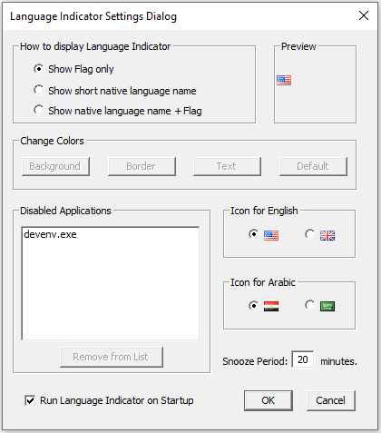
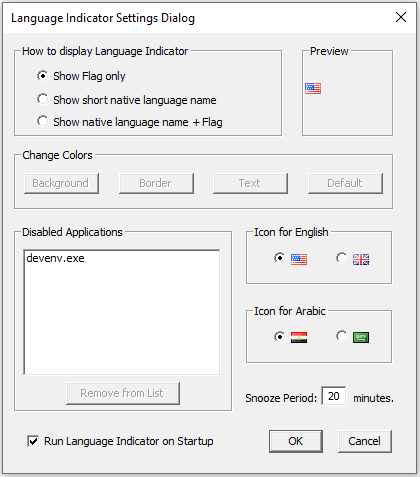

About Language Indicator
Language Indicator is a small, yet very helpful piece of software that was designed to help people who use more than one language on their computer.
It's main goal is simply to show a small tooltip indication that shows the current keyboard language before you start typing any text on any editable area.
It was born as a self helper software that I have created for myself after many times of mistyping text using the wrong language.
I hope you will find it useful for you as well and I'll be very grateful to hear any comments of any type to improve it in the next versions.
Settings Dialog
Most of Language Indicator behaviour and appearance can be changed in the Settings dialog:
 Technically..
Language Indicator is composed of two files. The main file is a DLL that does most of the work and EXE file that simply runs that DLL and also adds the icon in the system tray.
It is written in C++ on Microsoft Visual Studio 2019 using native Win32 API calls. Not MFC nor .NET packages are needed
Current (and not last) Version - 1.4.0
Release Date - 3 Dec 2024
Language Indicator is a small, yet very helpful piece of software that was designed to help people who use more than one language on their computer.
It's main goal is simply to show a small tooltip indication that shows the current keyboard language before you start typing any text on any editable area.
It was born as a self helper software that I have created for myself after many times of mistyping text using the wrong language.
I hope you will find it useful for you as well and I'll be very grateful to hear any comments of any type to improve it in the next versions.
More Info
Language Indicator flag is displayed whenever you click on some editable area or when the focus moves to editable area as illustrated in the video on the right.
If you move the mouse cursor over the flag icon, it will be changed to more informative window:

Now you can do the following:
- Click on the flag icon or the language name to change the keyboard language layout.
 Click the Settings button to open the Settings dialog.
Click the Settings button to open the Settings dialog.- Click the Snooze button to pause the app temporarily for a predefined time, which can be changed in the Settings dialog.
 Click on the Disable button to permanently disable Language Indicator for this application. (You can remove application from the disable list in the Settings dialog)
Click on the Disable button to permanently disable Language Indicator for this application. (You can remove application from the disable list in the Settings dialog)
Settings Dialog
Most of Language Indicator behaviour and appearance can be changed in the Settings dialog:
 Technically..
Language Indicator is composed of two files. The main file is a DLL that does most of the work and EXE file that simply runs that DLL and also adds the icon in the system tray.
It is written in C++ on Microsoft Visual Studio 2019 using native Win32 API calls. Not MFC nor .NET packages are needed
Current (and not last) Version - 1.4.0
Release Date - 3 Dec 2024